Monta tu
IA Local
25 · jun · 2026
José L. Redrejo Rodríguez
Datos para empezar
¿Por qué ejecutar IA
en
tu propio ordenador?
Privacidad · Soberanía · Coste · «Ya es viable». La IA local pasó de experimento a herramienta diaria.
La IA ya está en el día a día del desarrollo
Fuente: informes de Google, Microsoft, GitHub y Stack Overflow (2026).
Privacidad, coste cero y modo offline
Privacidad absoluta
Tu código nunca sale de tu ordenador. La única forma 100% segura para datos bajo NDA o de clientes.
Cero costes extra
Sin cuota mensual de tokens ni caídas de API. Es gratis.
Modo offline
Funciona sin conexión. Tu copiloto siempre listo.
60.000× cómputo vs. 100× ancho de banda → brecha de 600×
- En 20 años de GPUs, el cómputo creció ~60.000×.
- El ancho de banda de memoria, solo ~100×.
- Resultado: una brecha de 600× → la inferencia local está limitada por memoria, no por cómputo.
- De ahí la importancia de la cuantización, MoE y la VRAM. El hardware de consumo ya llegó al punto en que correr local merece la pena.
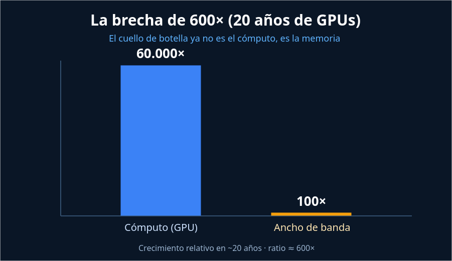
No son 6 meses,
son 4 años
De ChatGPT (2022) a la IA local madura (2026).
De ChatGPT a la IA local madura
- 2022 — ChatGPT populariza los LLM.
- 2023-24 — Llama abre los modelos open-weight; nace el ecosistema local (llama.cpp, GGUF, cuantización).
- 2025 — Los agentes de código cruzan el umbral de calidad (RLVR). De experimento a «daily driver».
- 2026 — Modelos abiertos potentes y pequeños corren en hardware de consumo.
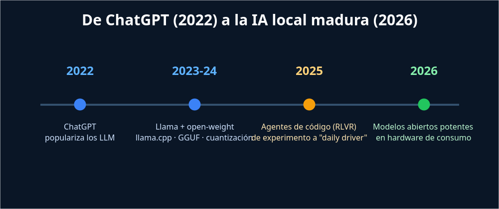
El liderazgo cambió de manos 5 veces en un mes
- Nov 2025: GPT-5.1 → Gemini 3 → GPT-5.1 Codex Max → Claude Opus 4.5 — liderazgo intercambiado 5 veces.
- RLVR (Reinforcement Learning from Verifiable Rewards) hizo que los agentes «mostly-work» como herramienta diaria.
- Abril 2026: Gemma 4 (mejores pesos abiertos de EE.UU.) y GLM-5.1 (754B, 1,51 TB open-weight).
- Qwen3.6-35B-A3B rinde en hardware de consumo (~20,9 GB).
- Mayo 2026: Gemma 4 12b multimodal en portátiles
- Junio 2026: GLM-5.2 a la altura de GPT 5.5 y Opus 4.5. Chino, pero disponible para descarga (en grandes empresas).
Los modelos abiertos cierran la brecha (y más baratos)
- Modelos chinos y abiertos (DeepSeek, GLM, Qwen) compiten con los cerrados.
- Mismo nivel de coding a una fracción del coste (p. ej. GLM ≈ 1/6).
- Implicación: lo que antes exigía la nube, hoy cabe en tu máquina.
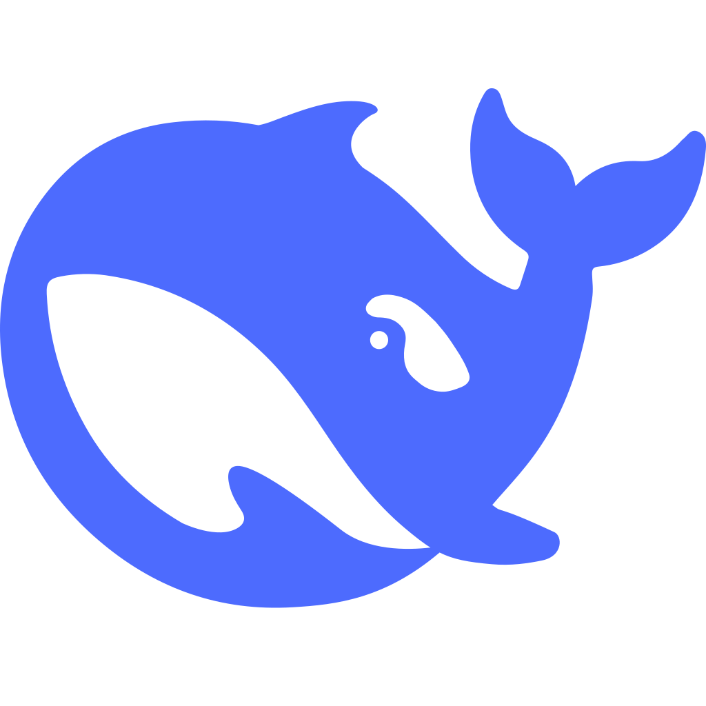
DeepSeekopen-weight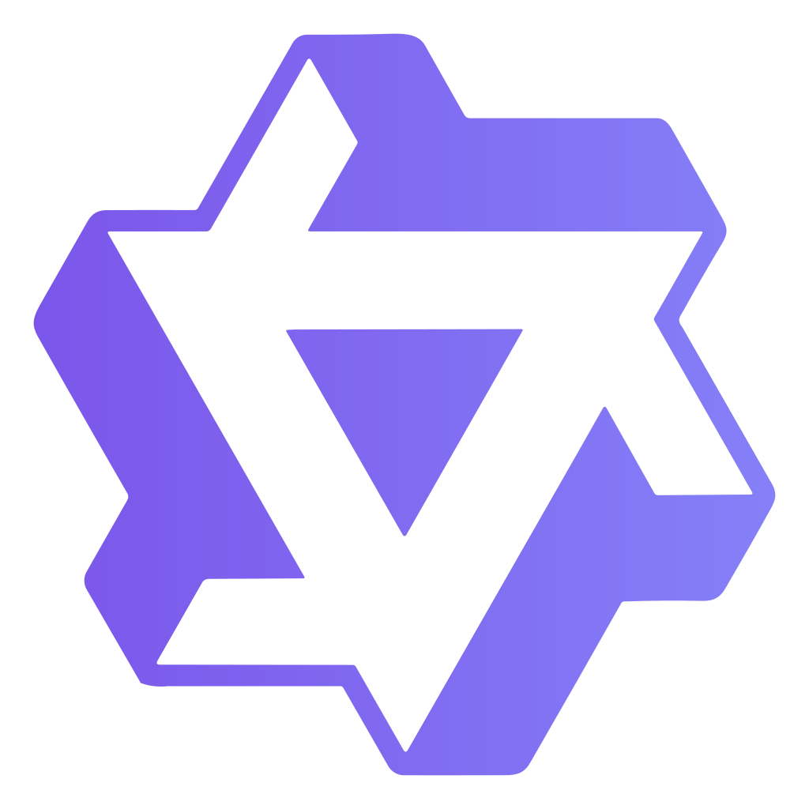
Qwencoding & agentesQué es un LLM
Definición accesible, tipos de modelos y los formatos que lo hacen posible.
Un LLM = un autocompletado gigante
- Un Large Language Model predice el siguiente token (trozo de palabra) a partir del texto anterior.
- Entrenado con enormes cantidades de texto: «aprende» patrones del lenguaje.
- No «razona» como un humano: calcula probabilidades. Pero a gran escala emergen capacidades (resumir, programar, traducir).
El mapa de modelos de hoy
| Modelo | Proveedor | Contexto | Precio (in/out) | Acceso |
|---|---|---|---|---|
| GPT-5.5 | OpenAI | 1.05M | $3.00 / $18.00 | Cerrado |
| Claude Opus 4.8 | Anthropic | 1M | $4.29 / $21.46 | Cerrado |
| Gemini 2.5 Pro | 1.04M | $0.87 / $7.00 | Cerrado | |
| DeepSeek V4 Pro | DeepSeek | 1M | Gratis | Abierto |
| Mistral Large 3 | Mistral | 262K | $0.50 / $1.50 | Abierto |
| Qwen3.7 Max | Alibaba | 1M | Gratis | Cerrado |
GGUF, MoE y cuantización: por qué cabe en tu PC
GGUF
Formato único y portable de llama.cpp / Ollama / LM Studio. Empaqueta pesos + metadatos.
Cuantización Q4·Q5·Q8
Comprime los pesos (16→4-8 bits). Pesa 4-8 GB y casi no pierde calidad. Elige versiones que acaban en Q4_K_M.
MoE · Mixture of Experts
Activa solo parte de los parámetros por token (35B con 3B activos → «A3B»). Rinde como uno grande gastando como uno pequeño.
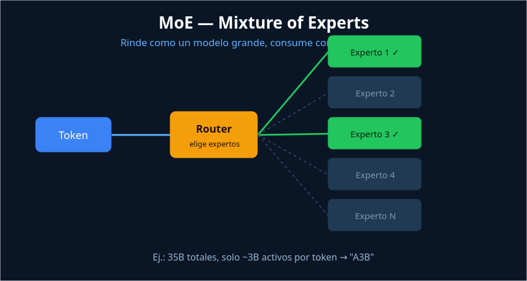
No necesitas el
ordenador de la
NASA
De una Raspberry Pi a una GPU de sobremesa: el factor limitante es la memoria.
Manda la memoria, no el cómputo
Modelos pequeños
3B-8B cuantizados. Justo, pero funciona.
Vas sobrado
Modelos decentes sin sufrir.
Vuela 🚀
GPU dedicada NVIDIA/AMD o Mac M1/M2/M3.
El «sweet spot» para empezar
| Modelo | RAM | Ancho banda | Precio | Notas |
|---|---|---|---|---|
| GMKtec EVO-X2 (Ryzen AI MAX+ 395) | 96-128 GB | 256 GB/s | $2.349-3.299 | Corre modelos 70B |
| Beelink SER10 MAX | 32 GB DDR5 | 86 TOPS | $1.799 | Sweet spot dev · 27B Q4 |
| Beelink SER9 | 32 GB LPDDR5 | iGPU 780M | $859 | Modelos 7B-13B |
| origimagic A3 | 32 GB DDR5 | — | $609 | El más asequible |
| Mac Studio M4 Max | 128 GB | 546 GB/s | $3.699 | 70B · software maduro |
| DGX Spark | 128 GB | 273 GB/s | $4.699 | Ecosistema NVIDIA |
El ancho de banda manda
| Hardware | VRAM | Ancho banda | Precio |
|---|---|---|---|
| RTX 5090 | 32 GB | 1.792 GB/s | $5-8K |
| Mac Studio M4 Max | 128 GB | 546 GB/s | $3.699 |
| RTX PRO 6000 | 96 GB | 1.8 TB/s | $22K |
| AMD Strix Halo | 128 GB | 212 GB/s | $2.000 |
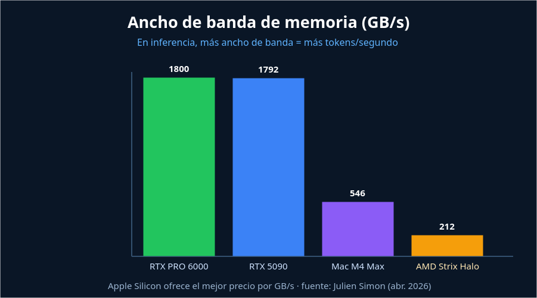
Las herramientas
Tres niveles: terminal, app visual y servidor. Todas usan GGUF y API compatible OpenAI.
Tres niveles: terminal, app visual y servidor

llama.cpp
El motor de bajo nivel. Máximo control, compilas tú.

Ollama
Terminal sencilla. Un comando y listo. (también koboldcpp)
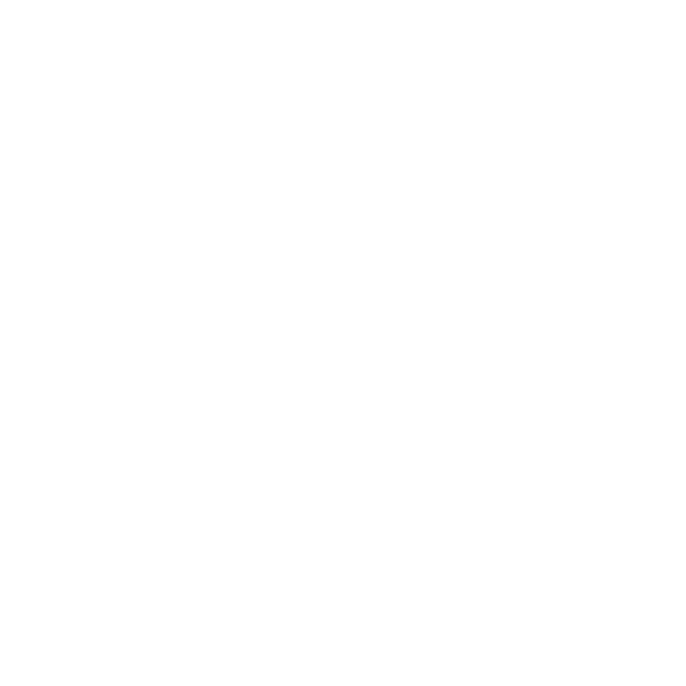
LM Studio
Interfaz visual tipo ChatGPT. Descarga con un clic.
koboldcpp / krasis
UI alternativa y orquestación experimental.
El motor en C/C++ que ejecuta GGUF
- Ejecuta GGUF en CPU y/o GPU. Es la base de Ollama y LM Studio.
- Conceptos: KV-cache (memoria de la conversación) y offload de capas a GPU (-ngl).
# ajusta CUDA a tu versión cmake -B build \ -DGGML_CUDA=ON \ -DCMAKE_CUDA_ARCHITECTURES=native \ -DCMAKE_BUILD_TYPE=Release \ -DGGML_CUDA_FA_ALL_QUANTS=ON cmake --build build -j$(nproc)
Un comando y listo
# 1 · descarga Ollama (web oficial) # 2 · abre tu terminal ollama run llama3.2 # modelo grande multimodal: ollama run llama3.2-vision:90b
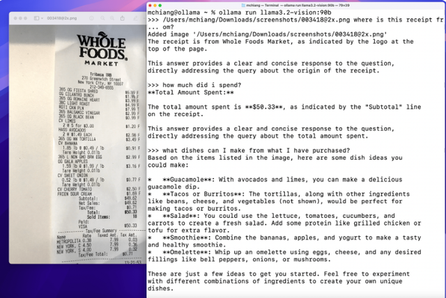
Busca, descarga con un clic y chatea
- App de escritorio (Mac/Win/Linux).
- Descarga desde Hugging Face. Elige versiones Q4_K_M.
- Levanta un servidor local (API OpenAI) para conectar editores.
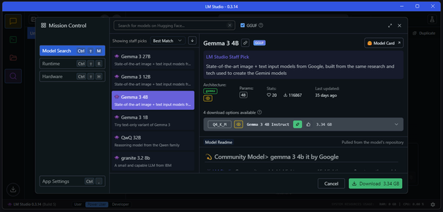
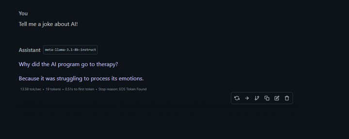
«No uses OpenAI: conéctate al modelo de mi PC»
- Ollama/LM Studio levantan un servidor local; lo apuntas en la extensión de copiloto.
- Flujo: instala extensión → catálogo → filtra «local» (CPU/GPU/NPU) → Añadir.
- Resultado: asistente que revisa y autocompleta en privado y sin pagar a terceros.
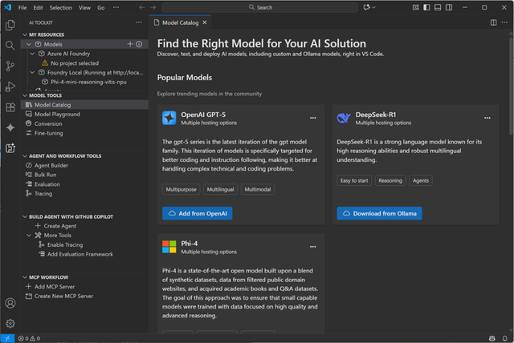
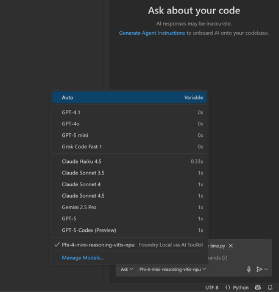
Qué modelo elegir para programar
| Modelo | VRAM | Mejor para |
|---|---|---|
| Gemma 4-12B · Google | 8-16 GB | All-rounder; el más listo de su tamaño · MTP 162 tok/s (3×) |
| LFM2.5-8B-A1B · LiquidAI | 8-12 GB | MoE híbrido (1B activo); rapidísimo y barato |
| Qwen3.6-27B · Qwen | 16-32 GB | Mejor agente local: 1.00 en tool-efficiency (32k/128k) |
| Qwopus3.6-27B-v2 · Jackrong | 16-32 GB | Mejor cuantización Q4; top en 5 benchmarks |
| Gemma 4-31B QAT · Unsloth | 16-32 GB | QAT + MTP: 76-125 tok/s; multi-agente |
| Nex-N2-Mini · Nex AGI | 16 GB+ | MoE 3B activo; razonamiento profundo multi-paso |
De «mi portátil»
a
varios usuarios
vLLM y AnythingLLM
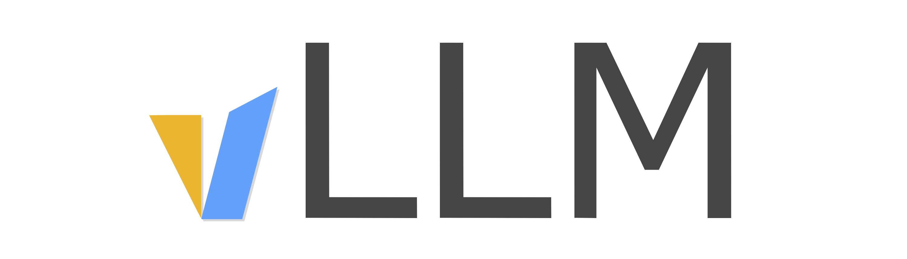
vLLM
Motor de inferencia de alto rendimiento. PagedAttention + batching continuo → mucho mayor throughput y varios usuarios concurrentes. API compatible OpenAI.
AnythingLLM
App todo-en-uno: chat + RAG sobre tus documentos + agentes. Se conecta a Ollama, LM Studio o vLLM. Ideal para equipos.
RAG: dale documentos a tu IA
Qué es, por qué importa, y el pipeline completo.
«El contexto es una pizarra que se borra»
- Un LLM olvida todo al cerrar la conversación. El contexto es limitado y temporal.
- RAG (Retrieval-Augmented Generation): memoria externa persistente. El modelo consulta tus documentos antes de responder.
- Respuestas basadas en TUS datos (privados, actualizados) sin reentrenar el modelo.
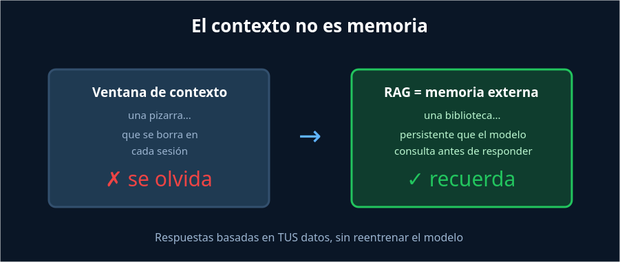
Embed → Store → Retrieve → Generate
- Chunking — se trocean los documentos.
- Embeddings — cada trozo → vector (significado numérico).
- Vector DB — se guardan (Chroma, Pinecone, Qdrant).
- Retrieve + Generate — se recuperan los trozos cercanos y se inyectan en el prompt.
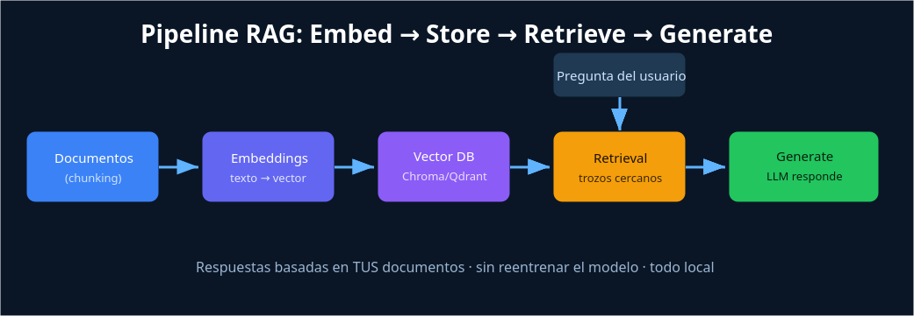
Tres formas de dar memoria a un agente
| Si tu trabajo es… | Mejor arquitectura |
|---|---|
| Recuperar respuestas de un corpus grande y cambiante | RAG |
| Construir conocimiento que se acumula con el tiempo | LLM Wiki (Karpathy) |
| Actuar de forma autónoma sin que se lo pidas | Fat Skills (gBrain) |
Del autocompletado
al
agente autónomo
Deja que la IA ejecute
Autocompletado
Sugiere la siguiente línea.
Chat
Le preguntas y copias/pegas.
Agente
Lee tu repo, planifica, edita varios archivos, ejecuta comandos, corre tests y corrige solo.
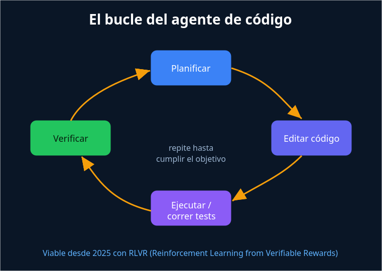
Los agentes que puedes usar hoy
OpenCode
Model-agnostic: lo apuntas a tu Ollama / LM Studio / vLLM local. TUI en terminal. El de la práctica.
Claude Code
El más potente. Skills, MCP y subagentes. Modelos en la nube (Claude).
Gemini CLI
Open source. Capa gratuita generosa con Gemini; soporta MCP.
Antigravity
Orquesta varios agentes + control del navegador. No solo terminal: IDE completo.
Dar disciplina al agente
- El problema de «tirar prompts a ciegas»: el agente divaga, no verifica, rompe cosas.
- GSD (Get Stuff Done): flujo estructurado (discutir → planificar → ejecutar → verificar) con commits atómicos y checkpoints.
- Superpowers (obra): colección de skills/workflows reproducibles.
Agentes, Skills,
MCP y
Loops
4 conceptos que lo desbloquean todo
Agente
Un LLM + herramientas + un bucle que decide qué hacer.
Skill
Un workflow en Markdown (pasos + criterios de salida) que el agente sigue.
MCP
Protocolo estándar para conectar el agente a datos y herramientas externas.
Loop
Percibir → decidir → actuar → observar, hasta cumplir el objetivo.
Workflows, no documentación
- Proceso sobre prosa — workflows que se ejecutan, no ensayos.
- Tablas anti-racionalización — respuestas a las excusas del modelo.
- Verificación innegociable — terminar con evidencia concreta.
- Divulgación progresiva — activar solo lo relevante (ahorra tokens).
- Disciplina de alcance — tocar solo lo pedido.
MCP: el «USB-C» de la IA
- Estándar abierto para conectar IA a sistemas externos: datos, herramientas y workflows.
- «Como un puerto USB-C para la IA» — construye una vez, integra en todas partes.
- Arquitectura: cliente (agente) ↔ servidor MCP (tools, resources, prompts).
- Soportado por Claude, ChatGPT, VS Code, Cursor… Calendar, Figma → web, Blender → impresión 3D.
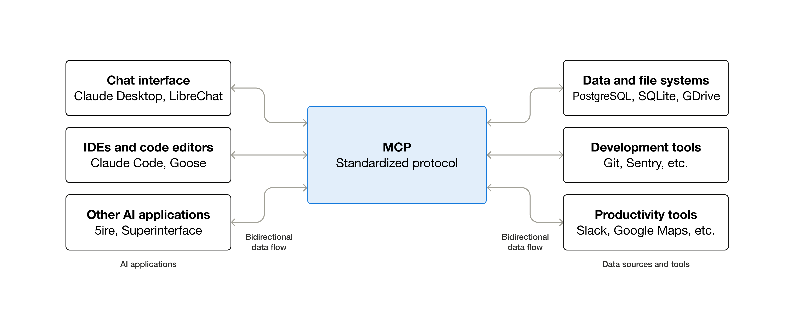
«Fat skills, thin harness»
- El loop convierte un LLM en agente: repite decidir → actuar → observar.
- El harness es el código mínimo (~200 líneas): ejecución, E/S y seguridad.
- Las skills aportan la inteligencia del workflow.
- Con un cron, las skills se ejecutan de forma autónoma y programada.
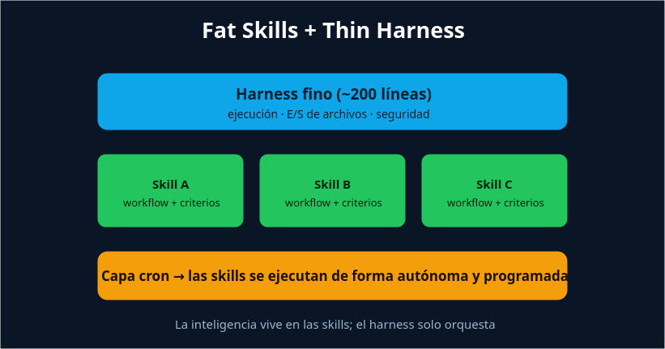
Monta tu propio
asistente
Modelo local + skills + MCP + memoria. Dos proyectos listos: OpenClaw y Hermes.
Tu PC como asistente (gratis)
- Agente que automatiza tareas: email, descargas, contenido, negocio. En bucle continuo.
- 1. Cuenta en OpenRouter (modelos gratis) o apunta a tu Ollama local.
- 2. Edita la config: modelo + credenciales.
- 3. Lanza OpenClaw y prueba desde la interfaz de administración.
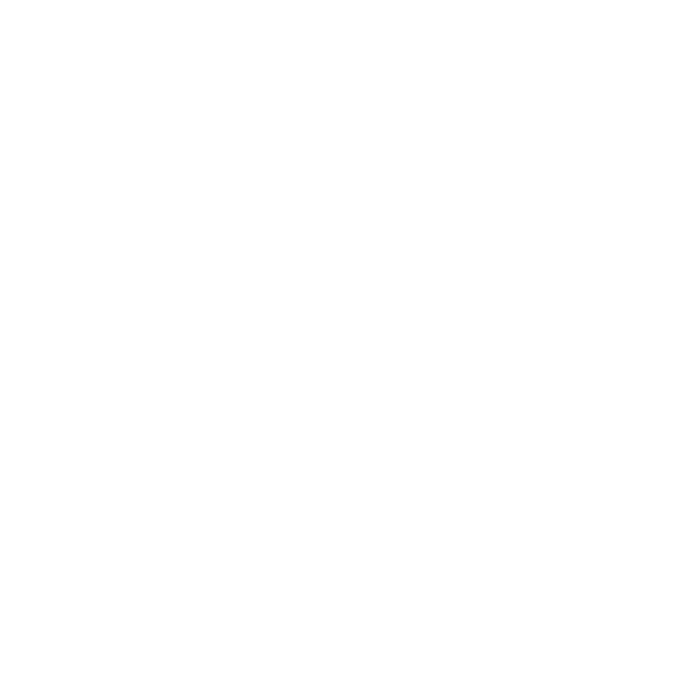
OpenRoutermodelos gratuitos · ClawHub para skillsEl agente que recuerda lo de ayer
- Open source self-hosted (Nous Research). Convierte tareas exitosas en skills reutilizables → hasta 40% más rápido.
- Memoria en 4 niveles: notas personales · perfil de usuario · búsqueda de sesiones (SQLite) · plugins de memoria externa.
- Seguridad: genera skills desde TUS workflows (no descarga código externo) → evita supply-chain. Aislamiento + escaneo de prompt injection.
- Model-agnostic: Anthropic, OpenAI, DeepSeek o local vía Ollama. Gateways a Telegram/Slack/Discord.
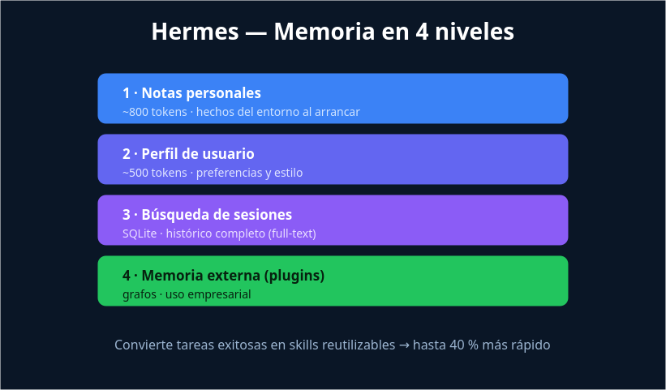
Más allá de
los LLM
Pinokio, IA en dispositivos pequeños y la memoria de Karpathy.
Pinokio, edge AI y GenCAD
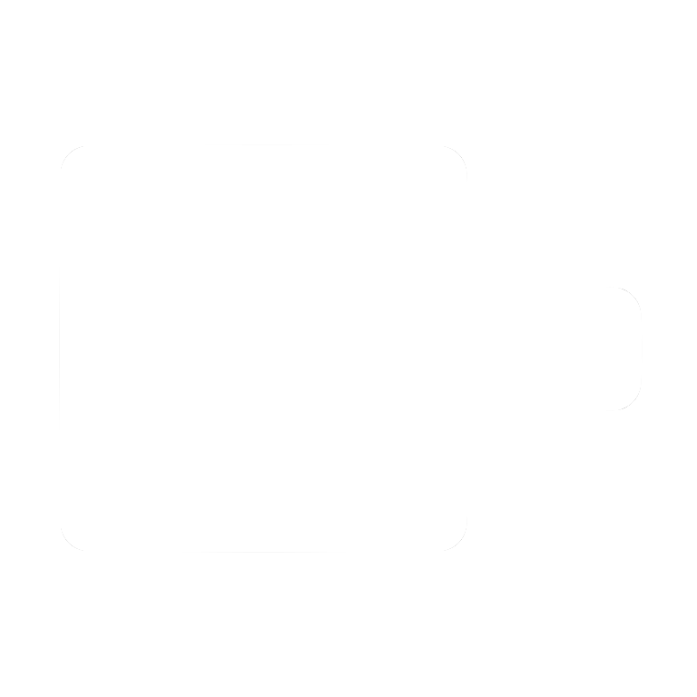
Pinokio
Un «app store» para IA local: imagen, audio, vídeo, LLMs con un clic, gestionando dependencias.
Edge AI
Modelos diminutos en Raspberry Pi, móviles y NPUs: asistentes offline, visión, sensores.

GenCAD
IA generativa que produce modelos CAD desde descripciones/imágenes. No solo texto: también objetos.
«La IA compila el territorio; tú lo recorres»
- Karpathy usa la IA para construir un segundo cerebro: una wiki LLM auto-mantenida en Markdown.
- 3 capas: /raw/ (fuentes) → schema (CLAUDE.md, las reglas) → wiki generada (resúmenes, entidades, backlinks).
- Operaciones: Ingest · Query · Lint (arregla enlaces huérfanos y datos obsoletos).
- Ventaja sobre RAG: el conocimiento se acumula y queda en Markdown legible. Conecta con Obsidian.
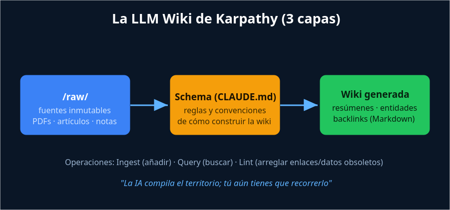
Conclusión
Tu checklist de soberanía
✅ Copiloto privado
Programa en VS Code con Ollama / LM Studio.
✅ Multimodal
Chatea y analiza imágenes/documentos.
✅ RAG propio
Tus documentos en AnythingLLM.
✅ Agentes
Editan código y corren tests.
✅ Asistente persistente
Con memoria: Hermes, OpenClaw.
✅ Segundo cerebro
En Markdown, estilo Karpathy.
De tirar prompts a ciegas
a
controlar tu entorno
- Elegir bien el modelo y dónde ejecutarlo marca la diferencia entre tirar prompts a ciegas y tener el control técnico.
- Privacidad + coste cero + offline + control = soberanía sobre tu IA.
Recursos y referencias
20 conceptos de IA en 20 min
Repaso rápido de vocabulario.
Curso de prompt engineering
Escribir mejores instrucciones.
Curso de agentes (Hugging Face)
Construir agentes paso a paso.
Harness Engineering
Diseñar el bucle/armazón de tus agentes.
El vocabulario en una pantalla
| Token | Trozo de palabra que procesa el modelo. |
| Contexto | Memoria temporal de la conversación. |
| GGUF | Formato de archivo de modelo (llama.cpp/Ollama/LM Studio). |
| Cuantización (Q4_K_M) | Comprimir pesos para que pese menos. |
| MoE | Activa solo parte de sus «expertos» por token. |
| VRAM / ancho de banda | Memoria de la GPU y su velocidad (el cuello de botella). |
| RAG | Dar al modelo memoria externa sobre tus documentos. |
¡Gracias!
Descarga Ollama o LM Studio y corre tu primer modelo esta semana.
Ollama
IRIA, Almendralejo
José L. Redrejo Rodríguez
Motivación +
«Siente la diferencia»
Tu primer modelo en local
-
Descarga LM Studio →
lmstudio.ai/download - Ábrelo y pulsa Model Search (icono de robot, a la izquierda)
- Explora y descarga un modelo. Ojo al tamaño: Phi-3-mini (2.39 GB) es pequeño y funcional
- Inicia el chat y haz tu primera pregunta
-
Developer (icono terminal) →
Load model→ pasa de Stopped a Running → abrehttp://localhost:1234/api/v1/models
RAG —
«Dale documentos a tu IA»
Un RAG local con AnythingLLM
-
Instala AnythingLLM (desktop) →
docs.anythingllm.com - Icono llave (settings) → Proveedores de IA → LLM → elige LM Studio y el modelo
- Vuelve al chat (flecha abajo) → Upload documents (icono caja+flecha, junto al nombre del chat) → añade documentos y muévelos al workspace
- Vuelve al chat y pregunta sobre tus documentos
Agentes y herramientas —
«La IA que hace cosas»
Conecta OpenCode a varios «cerebros»
-
Instala OpenCode (Windows x64) →
opencode.ai/download -
Edita
…\AppData\Roaming\opencode\opencode.jsoncon tus backends → -
Alternativa visual: OpenGUI →
opengui.io/download
{
"provider": {
"lmstudio": {
"npm": "@ai-sdk/openai-compatible",
"options": { "baseURL": "http://localhost:1234/v1" },
"models": { "qwen2.5-coder:7b": { "name": "Qwen2.5-Coder 7B" } }
},
"vllm": {
"npm": "@ai-sdk/openai-compatible",
"options": { "baseURL": "http://10.10.10.62:8000/v1" },
"models": { "Qwopus3.6-27B": { "name": "Qwopus3.6-27B" } }
},
"llama.cpp": {
"npm": "@ai-sdk/openai-compatible",
"options": { "baseURL": "http://10.10.113.187:8000/v1" },
"models": { "Qwopus3.6-27B": { "name": "Qwopus3.6-27B" } }
}
}
}
Pon el agente a trabajar
-
Lanza
opencodey elige el backend/modelo: lmstudio, vllm o llama.cpp - Pídele un plan para hacer una web y deja que lo ejecute
-
Crea una presentación usando
llama.cpp y el skill
frontend-slides
localhost:1234 · servidor IRIA
10.10.10.62:8000 · RTX 5090.
(esta misma presentación se hizo así)
Tu propio asistente
+
Conclusión
Instala Hermes y conéctalo a un LLM
-
Descarga e instala Hermes →
hermes-agent.nousresearch.com -
Ejecuta
hermes setup(ohermes model) - En el menú: elige «Custom / OpenAI-compatible endpoint»
-
URL base:
http://localhost:1234/v1(tu PC) ohttp://10.10.10.62:8000/v1(servidor IRIA) -
API Key:
ollama(cualquier texto) · Modelo:llama3.2/Qwopus3.6-27B(IRIA), o el que devuelvalocalhost:1234/api/v1/models
Bot de Telegram y su «alma»
-
@BotFather →
/newbot→ nombre + usuario acabado enbot→ guarda el token -
@myidbot →
/start→ te devuelve tu ID numérico -
hermes gateway setup→ elige Telegram → introduce el token + tu ID -
hermes gatewaypara iniciarlo. Pruébalo: responde, transcribe voz y ejecuta tareas
C:\Users\TU_USUARIO\.hermes\SOUL.md
define su comportamiento.
hermes setup para añadir más
funcionalidades.
Apéndice técnico:
llama.cpp
Compilación con CUDA y configuraciones de llama-server afinadas por VRAM.
Compilar llama.cpp con CUDA
rm -Rf build cmake -B build \ -DGGML_CUDA=ON \ -DCMAKE_CUDA_COMPILER=/usr/local/cuda-13.3/bin/nvcc \ -DCMAKE_CUDA_ARCHITECTURES=native \ -DCMAKE_BUILD_TYPE=Release \ -DLLAMA_BUILD_TESTS=OFF \ -DLLAMA_BUILD_EXAMPLES=OFF \ -DGGML_CUDA_FA_ALL_QUANTS=ON \ -DGGML_NATIVE=ON cmake --build build --config Release -j$(nproc)
-DCMAKE_CUDA_COMPILER a tu versión de CUDA. -DCMAKE_CUDA_ARCHITECTURES=native compila para tu propia GPU.Servir en 12 GB de VRAM
./llama-server \ --model /models/gemma-4-31B-it-Q4_K_M.gguf \ --alias Gemma4-Q4 \ --host 0.0.0.0 --port 8000 --parallel 1 \ --ctx-size 16384 --n-gpu-layers 35 \ --cache-ram 2048 \ --batch-size 512 --ubatch-size 128 \ --threads 8 --threads-batch 8 \ --cache-type-k q4_0 --cache-type-v q4_0 \ --temp 1.2 --top-p 0.95 --top-k 64 --min-p 0.05 \ --repeat-penalty 1.1 --flash-attn on \ --no-context-shift --reasoning-format none --jinja \ --log-file /var/log/llama-server/llama-server.log
./llama-server \ --model /home/jose/models/Qwen3.6-35B-A3B-Claude-4.7-Opus-Reasoning-Distilled-APEX-I-Nano.gguf \ --alias Qwen3.6-35B \ --host 0.0.0.0 --port 8000 \ --ctx-size 49152 --n-predict 49152 \ --cache-ram 8192 \ --batch-size 2048 --ubatch-size 256 \ --threads 10 --threads-batch 10 --parallel 1 \ --cache-type-k q4_0 --cache-type-v q8_0 \ --temp 0.15 --top-p 0.9 --top-k 40 --min-p 0.05 \ --repeat-penalty 1.0 --reasoning off \ --flash-attn on --no-context-shift --no-warmup \ --jinja --chat-template-file /home/jose/models/chat_template.jinja \ --log-file /var/log/llama-server/llama-server.log
Servir en 32 GB de VRAM · todo en GPU
./build/bin/llama-server \ --model /models/SuperGemma4-31b-abliterated.Q4_K_M.gguf \ --host 0.0.0.0 --port 8000 --alias "Gemma4" --parallel 1 \ --temp 1.0 --top-p 0.95 --top-k 64 --metrics \ --chat-template-kwargs '{"enable_thinking":true}' \ --threads 10 --ctx-size 131072 --jinja \ --chat-template-file ./chat_template_gemma4abliterated.jinja \ --no-warmup
# Q8_0: ojo, puede entrar en loops ./llama-server \ --model /models/Qwopus3.6-27B-Coder-MTP-Q8_0.gguf \ --alias Qwopus3.6-27B \ --host 0.0.0.0 --port 8000 \ --threads 8 --threads-batch 8 --parallel 1 --kv-unified \ -ngl 99 -c 131072 --cache-ram 0 \ --cache-type-k f16 --cache-type-v f16 \ --flash-attn on -b 4096 -ub 1024 --jinja --reasoning off \ --chat-template-kwargs '{"preserve_thinking": false}' \ --chat-template-file /data/models/qwen_chat_template.jinja \ --temp 0.8 --top-p 0.95 --top-k 20 --min-p 0.0 \ --spec-type draft-mtp --spec-draft-n-max 3 \ --log-file /var/log/llama-server/llama-server.log
Gemma 4-31B Q8 + flags clave
./llama-server \ --model /models/gemma-4-31B-it-UD-Q8_K_XL.gguf \ --alias gemma-4-31B \ --host 0.0.0.0 --port 8000 \ --threads 8 --threads-batch 8 --parallel 1 --kv-unified \ -ngl 99 -c 131072 --cache-ram 0 \ --cache-type-k q8_0 --cache-type-v q8_0 \ --flash-attn on -b 2048 -ub 512 \ --jinja --reasoning on --reasoning-budget 1024 \ --presence-penalty 1.1 \ --chat-template-kwargs '{"preserve_thinking": true}' \ --temp 1 --top-p 0.95 --top-k 64 --min-p 0.0 \ --log-file /var/log/llama-server/llama-server.log
-ngl capas del modelo a la GPU-c / --ctx-size contexto (tokens)--cache-type-k/v cuantización del KV-cache--flash-attn atención optimizada-b / -ub batch / micro-batch--parallel peticiones concurrentes--spec-type draft-mtp decodificación especulativa--jinja + plantilla de chat